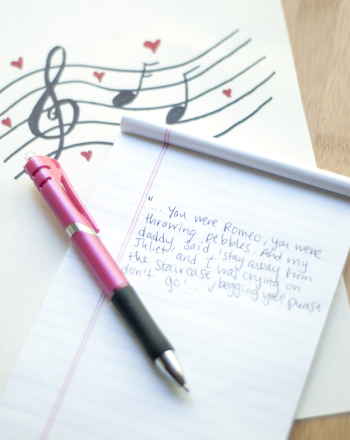

Singing in Church

My father was the Pastor of our church. So naturally,I began singing in church. I led my first solo in church at the tender age of 5. The song was "Show Me The Way." I can vividly remember this day and I still remember every word to this song! I was so proud of myself for singing this song when I was so small. As I continued to develop as a singer, I began to lead more solos. I still sing in church today and I am a part of the Praise Team and Choir.
Singing in School

My love for singing continued to grow and I began singing at school. I sang at several programs in Middle School. In 8th grade I sang the National Anthem at a Memphis Chicks Baseball Game. Picture a very small young girl standing on the center of the Mound. What an experience! I continued to sing in High School at Overton High School under Dr. Lulah Hedgeman. I learned several styles of music and learned to sing in foreign languages. By the time I reached my senior year, I was in 7 choirs. Ms. Hedgeman taught me so much.
Song Writing
I began writing songs when I was 13 years old. In college I began working with a producer and started recording original songs. I continued to write, record and perform songs until I had my first child. I haven't done much lately and I am eager to start this process again.